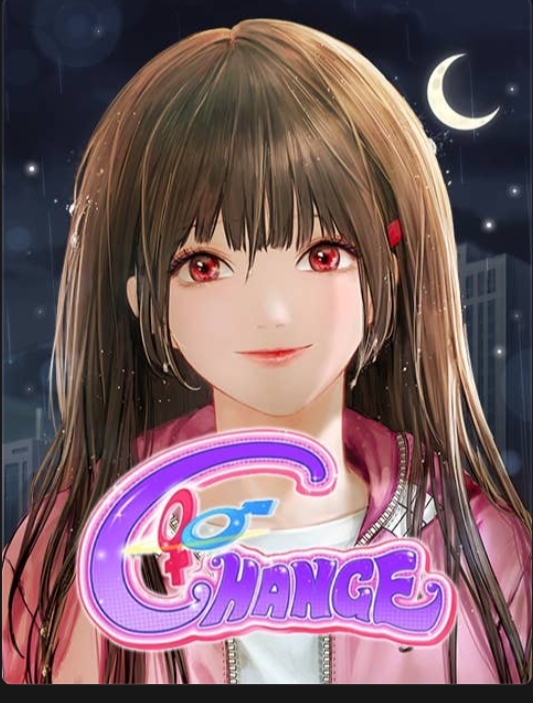
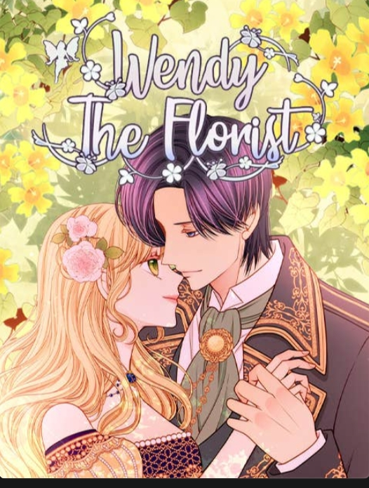
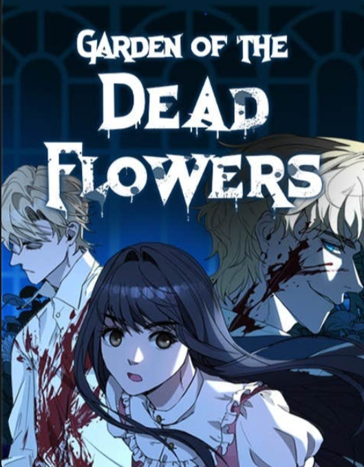
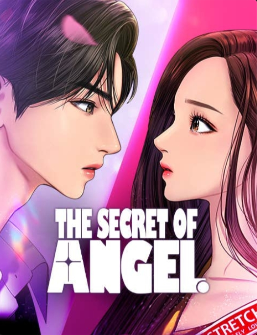
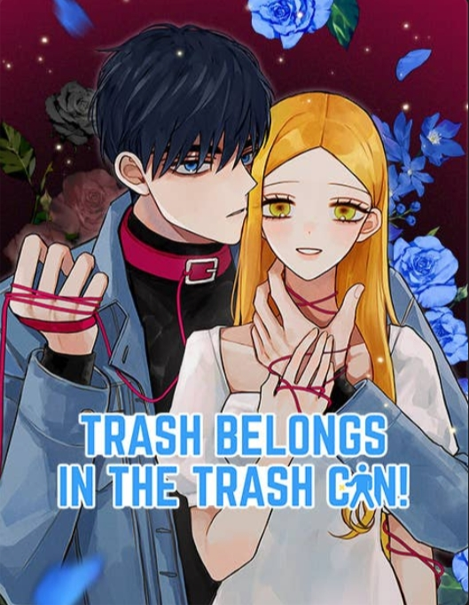
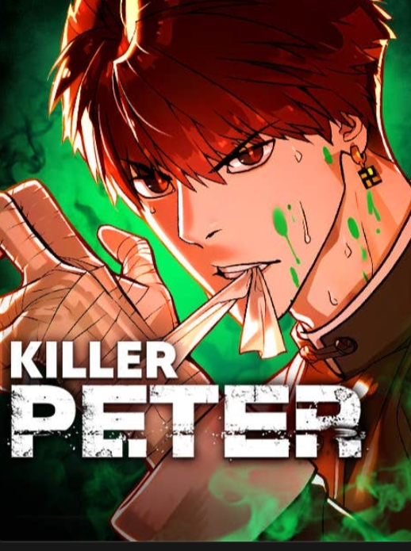

Medeia telah memenangkan sayembara menjadi putri mahkota, namun tiba-tiba saja Putra Mahkota laros memilih Psyche jadi calon pengantinya! Penuh amarah, Medeia bertekad merebut segalanya kembali dari Pysche. Sayang sekali, jiwa mereka malah tertukar.
| Judul | Pengarang | Genre | Status |
|---|---|---|---|
| I Wanna Be U | Sam | Fantasi, Kerajaan, Pengkhianatan, Pertukaran Tubuh | Ongoing |
| Rumor Has It | Noey | Romantis, Perundungan, Keluarga | End |
| From Dreams to Freedom | 2L | Thriller, Romantis, Perundungan, Balas Dendam | End |
| Change | Jinone | Romantis, Pertukaran Tubuh, Ambil Alih Tubuh | End |
| Wendy the Florist | Bize, Sizh | Drama, Kerajaan, Cinta Segitiga, Kehidupan Ganda | End |
| Wonderwall | Senaloli | Romantis, Musuh jadi Kekasih, Coming of Age | End |
| Garden of the Dead Flowers | Sero, Corbenyx | Thriller, Drama, Perjalanan Waktu, Konspirasi | End |
| The Secret of Angel | Yaongyi | Romantis, Industri Hiburan, Coming of Age | End |
| Trash Belongs in the Trash Can! | Eddiering | Romantis, Permainan Pikiran, Masa Lalu Traumatis | End |
| Killer Peter | Lim Lina, Kim Junghyun | Aksi, Drama, Assasin | Ongoing |
Medeia telah memenangkan sayembara menjadi putri mahkota, namun tiba-tiba saja Putra Mahkota laros memilih Psyche jadi calon pengantinya! Penuh amarah, Medeia bertekad merebut segalanya kembali dari Pysche. Sayang sekali, jiwa mereka malah tertukar.

Kehidupan yang toxic dan penuh rumor tidak membuat Agatha Bellen, seorang penulis thriller menyerah dalam menjalani hidupnya. Oh... Rumor Has It, dia bukanlah protagonis dalam kisah ini.

Sebagai seorang remaja, Choi Jung-min dibully dengan parah di sekolah oleh Ha Joo-Hyeon. Pelariannya dari segala masalahnya adalah "lucid dream" dimana ia bisa membalas Ha Joo-hyun saat Jung-min sedang tidur. Lalu, suatu hari, ia bertemu dengan seorang pria misterius di mimpinya, dan mendapatkan sebuah tawaran untuk membalas dendam kepada siapapun yang mengganggu dia.

Kenapa aku berubah jadi cewek?!

Katanya perempuan ini bisa menumbuhkan tanaman secera ajaib!
Bagi Jessy, "Wonderwall" adalah seseorang yang selalu ada untukmu dan membuatmu bahagia. Seseorang yang membuatmu tidak berhenti memikirkannya. Tapiii, gimana kalau orang itu ada dua?

Saat Mila terbangun, tiba-tiba dia sudah ada di Batavia pada zaman kolonial Belanda dan melihat kakekknya yang masih muda membunuh wanita! Kakek yang dia kira baik, ternyata membunuh gadis-gadis itu di tamannya dan menanamnya hingga menjadi bunga-bunga baru.

Lim Ju Gyeong, seorang siswi SMA yang merasa tidak percaya diri dengan penampilan wajah aslinya tanpa riasan. Berkat makeup, ia berubah menjadi gadis yang sangat cantik dan populer di sekolah baru. Namun, rahasia besar tentang wajah aslinya diketahui oleh Lee Suho, seorang pemuda tampan yang dingin. Cerita berlanjut dengan dinamika romantis, persahabatan, dan cinta segitiga termasuk kemunculan Han Seo-jun.

Hidup dengan menggunakan uang dari pacar, itulah yang dilakukan Woobin, manusia seperti sampah. Namun di hari saat ia memutuskan pacar lamanya, dia justru bertemu wanita cantik yang justru sangat jauh berbeda darinya?

Killer legendaris bernama Peter yang kini sudah tua dan sakit-sakitan diincar mati-matian! Setelah tertangkap oleh salah satu kelompok yang mengincarnya, dia menghilang entah ke mana. Ternyata... setelah terluka parah, Peter kembali ke wujudnya saat masih remaja yang lebih kuat dengan raga muda dan sehat. Apa rencana Peter setelah perubahan hidupnya yang tak masuk akal ini?
Hai, saya Aprilia. Saya suka membaca komik terutama komik bergenre fantasi, thriller, aksi, kerajaan, komedi, dan romansa. Halaman web ini dibuat untuk mendokumentasikan berbagai komik favorit yang saya baca. Melalui halaman ini, judul, pengarang, genre, serta status komik dapat diakses dengan mudah dan terstruktur.